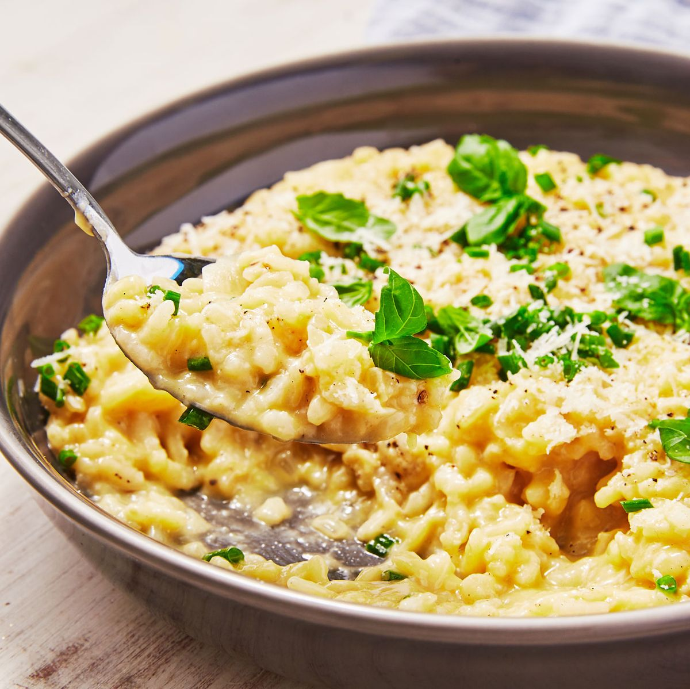

Risotto

What is Risotto?
Risotto is a creamy Italian rice dish that is cooked slowly with broth and often includes ingredients like cheese, vegetables, or meat.
What ingredients do you need?
- Short-grain Arborio
- Rice
- Broth
- Butter
- Onion
- White Whine
- Parmesan Cheese
What are the steps to making Risotto?
- Saute onions in butter unitl they're soft.
- Add rice and stir until its coated in the butter.
- Add white whine to pan and stir until absored.
- Gradually add broth to the pan, stirring constantly until each addition is absorbed.
- Finally stir in Parmesan cheese and any other ingredients you want to add.
Complete! Enjoy!
Back to Main Menu!